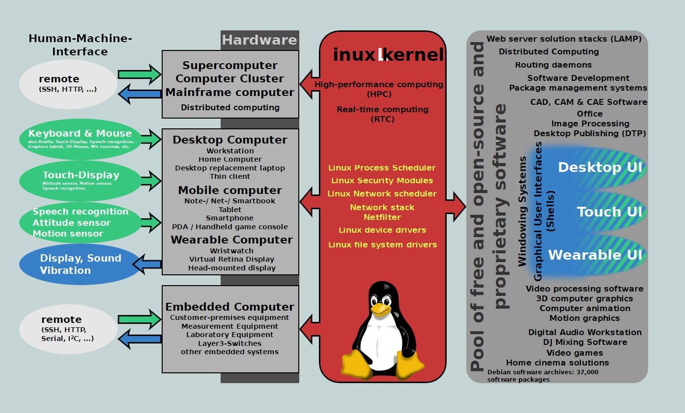

Un kernel désigne l'une des parties d'un système d'exploitation. On le traduit d'ailleurs souvent en français par noyau de système d'exploitation. La mission du kernel est double : gérer les ressources d'un ordinateur et faciliter la communication entre
les matériels et les logiciels de l'ordinateur. Partie fondamentale du système d'exploitation, le kernel joue un rôle important dans l'exécution des programmes. Il impose des performances élevées, et une conception ainsi qu'une programmation de
haut niveau
